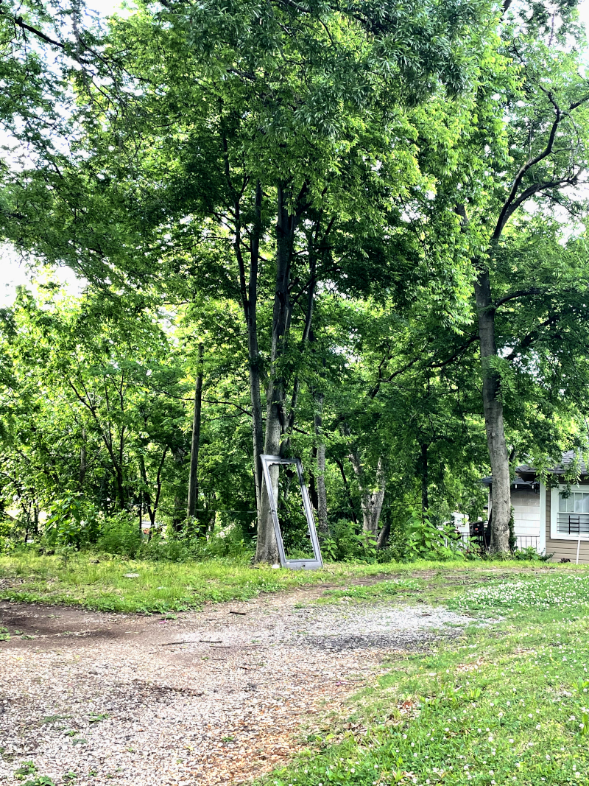

4. Hosting
9 May 2021
So, you've written your blog. Now it's time to put it out there and let the world read it! Hosting a website is easier than ever these days. For a small blog there are many free options.
Neocities
Neocities is what I used for this site. It's super user-friendly, hassle-free, and it has a community feature that makes it easy to find and connect with other blogs. Almost like building a webring.
For a small price you can put your site on your own domain name with full SSL certification. Otherwise your site is appened with neocities, as seen above.
Surge
Surge is a pretty neat command line tool. It lets you take a folder and push it to their platform right away. Pretty perfect for a Zoner built folder. It does require some techinical knowledge though.
It's entirely free if you don't mind having your site on their domain in the url bar, similar to Neocities and Tumblr. There's also a cheap paid option to use your own domain name, also similar to Neocities.
GitHub Pages
GitHub/Microsoft works with ICE, so that's a bit yikes. But Pages is a decent free service. Also requires some technical knowledge of how git works in general.
You can use your own domain name for free but I don't think you can have SSL certification with it.
That's about it I think. I hope Zoner helps you express yourself and write wonderful things that enrich the world. Have fun!
